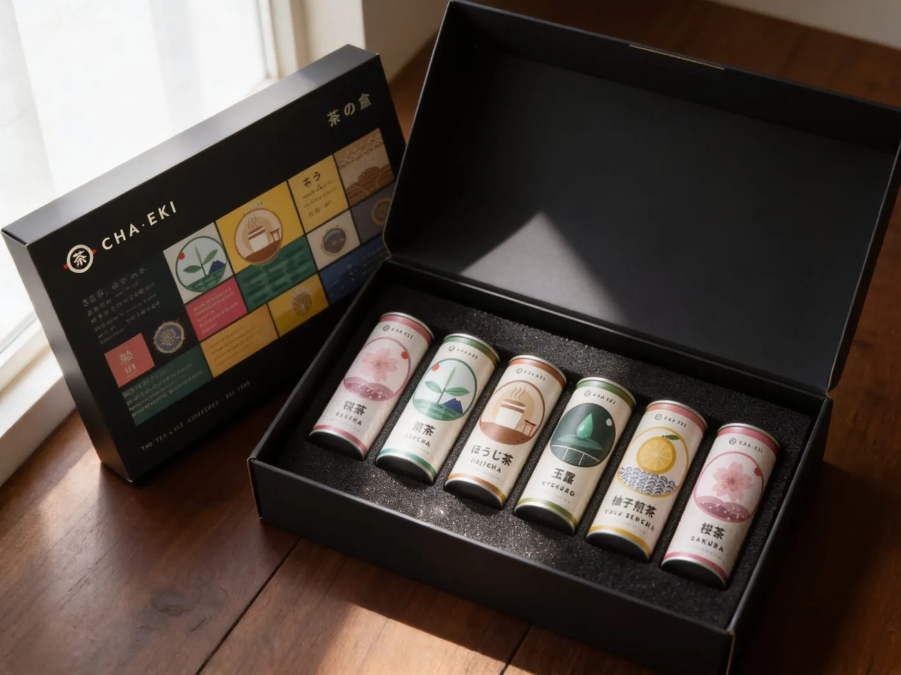

In Japan, tea is a path: chadō, the way of tea. We took it literally. One railway, six tea regions, and a mountain that pours matcha.
CHA·EKI
Scroll to boardEvery tea in Japan comes from a place you can visit by train. So we built a line between them. Six stations, six teas, one ticket. Get off where the flavour is.
The packs · 06 tickets
Every pack
is a ticket.
Ticket office · 切符売り場
Which station
is yours?
Final stop · 茶室 · The tea house
The
ceremony.
- 01Sift 2 g of matcha into the bowl.
- 02Pour 70 ml of water at 80°C.
- 03Whisk fast in an M shape for 15 seconds.
- 04A fine foam. Drink it in three sips.
01Sift
Six stations · six posters
Printed for
the platform.

Gift edition · 茶の旅
The whole line in one box.
Open the lid and the route map unfolds: six stations, six tins, one journey to give.